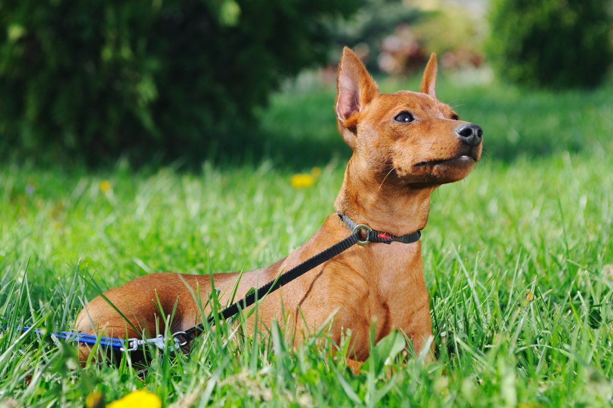

| דף ראשי | גזעים | מחלות | רקעים ותמונות | סקר | צרו קשר |
|---|
| קוקר ספאנייל |
| סמוייד |
| שפיץ יפני |
| פומרניאן |
| פודל |
| דני ענק |
| דלמטי |
| רועה גרמני |
| רועה קווקזי |
| רועה בלגי |
| בולדוג אמריקאי |
| בולדוג צרפתי |
| בולדוג אנגלי |
| צ'או צ'או |
| שיצ'ו |
| אמסטף |
| פינצ'ר |
| רוטווילר |
| דוברמן |
| האסקי סיבירי |
פינצר
מידע כללי
הפינצ'ר הוא אחד מגזעי הכלבים הנפוצים בעולם ובישראל. הסיבות שהפינצ'ר זוכה לאהדה כזאת הן רבות. הפינצ'ר אוהב בני אדם והוא רואה בהם חלק מהלהקה שלו. הפינצ'ר הוא כלב אמיץ לעיתים אמיץ מידי, אפשר לראות בו כדוגמא לאומץ לב ונחישות.
פינצ'ר - מקור הגזע והיסטוריה
מוצאו של הפינצ'ר הוא מגרמניה, אבל החוקרים חלוקים בדעותיהם לגבי הגזעים שמהם נולד הפינצ'ר שאנחנו מכירים היום. דעה אחת אומרת שהפינצ'ר הוא תוצאה של הכלאת טריירים שונים. דעה אחרת טוענת שהפינצ'ר הוא הכלאה של גרייהאונד ורועה הולנדי. בתחילה היה תפקידו של הפינצ'ר לצוד מכרסמים קטנים. הפינצ'ר מאתר את הטרף בעזרת חוש השמיעה המפותח שלו ובחוש הריח. עם הזמן הפך הפינצ'ר מכלב ציד לכלב שעשועים. היום אפשר למצוא אותו בכל מקום בעולם.
פינצ'ר - נתונים ומאפיינים
הפינצ'ר הוא גזע עם מבנה צר ואתלטי. הפרווה של הפינצ'ר קצרה מאוד וצבע הפרווה נע בין שחור לחום. אוזניו קטנות ומחודדות וזנבו קצר.
גובה:25-30 ס"מ
משקל: 4-7 ק"ג
מחלות נפוצות וטיפול - כלב פינצ'ר
לפינצ'ר אין מחלות מיוחדות. שאלה שעולה אצל מגדלים רבים היא האם לקצץ את האוזניים ואת הזנב, על מנת למנוע פציעות או שבירת זנב בעתיד. הקיצוץ לא פוגע באיכות חייו של הכלב או ביצירת קשר עם כלבים אחרים (מיתוסים של אלה שנגד הקיצוץ). הדעות חלוקות לגבי נושא הקיצוץ. לכן התייעצו עם הווטרינר שלכם לגבי נושא הקיצוץ.
